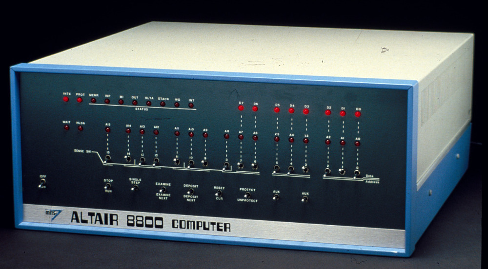
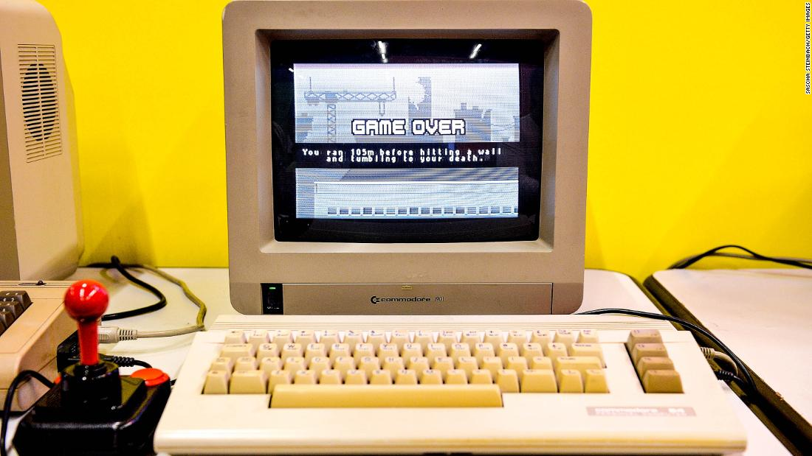
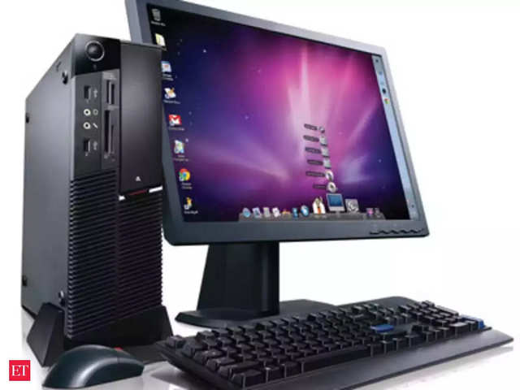

The evolution of Computers
ENIAC
ENIAC, which stands for Electronic Numerical Integrator and Computer was the first programmable, electronic, general-purpose digital computer, completed in 1945 and financed by the United States Army, the Ordnance Corps and the Research and Development Command, led by Major General Gladeon M. Barnes. Although ENIAC was designed and primarily used to calculate artillery firing tables for the United States Army's Ballistic Research Laboratory its first program was a study of the feasibility of the thermonuclear weapon. ENIAC had a speed of one thousand times faster than an electromechanical machine. The speed and programmability allowd for thousands more calculations and problems, as it could calclate a trajectory in just 30 seconds that would take a human 20 hours, making 1 ENIAC hour replace 2.400 human hours.

The total cost of ENIAC was about 487.000 US dolars, which are is equivelent to 7.195.000 US dolars today. They started building it in secret from the public in 1943 at the University of Pennsylvania under the code name "Project PX". The two main desingers were John Mauchly and J. Presper Eckert with the help of the desing engineers. Also, a big part of ENIACS development were the women programmers that work on the project. ENIAC was a modular computer which was composed by individual panels to perform various funtions. Some of them were accumulators that the only thing they could do is addition and subtruation. The hight speed of ENIAC was achived because of the panels that had to send and receive numbers, compute them, save the answer and then trigger the next operation without having to move any parts.
.jpg)
ENIAC had an unprecedented 18,000 vacuum tubes. In order to keep so many of them working at the same time, engineers created strict circuit design guidelines to maximize reliability. They ran extensive tests on components and avoided pushing them to their limits, which included operating vacuum tubes well below their maximum voltages to prolong their life. But before 1948, the tubes that ENIAC used burned out almost every day, making it unusable half of the time. It was after 1948 that special hight-reliability tubes were intoduced that allowed for a more practical use. Most of this failures occured during the warm-up and cool-down periods, when both the tube heaters and cathodes were under the most sress.
Altair 8800
The Altair 8800 was desinged by Edward Roberts, that worked for a company in New Mexico named MITS, not long after the introduction of the 8080 chip by Intel. Altair met the technocal requirments of a smallpersonal computer. The name Altair comes form the star Altair, that Robert's daughter picked the name for the computer. It was the first microcomputer to sell in large amounts, with a photograph of it being takeng and released on January of 1975. Altair 8800 it had the minimum amount of circuits to be called a computer. With no external memory, printer or keyboard and no other input devices. Even if one could assemble the kit coreclty, it would not run so optimal at times.
Commodore 64
The Commodore 64 was developed by the company Commodore the originaly manufactured typewriters and adding machines, moving to electronic calculators and the to computers. With their erlier successes like the PET and VIC-20, they starded working on a new system in 1981. Promising to have a 64KB or RAM. The Commodore 64, or C64 apeared at CES, in 1982 and it started shiping eight months later. They were able to sell it with less cost, due to them being able to make their own chips, selling up to 17 million units by 1994. Software developers trageting the C64, writing thousands of tites for the system, and games were most popular there. But by the early 1990s, the Personal Computer or PC became more afordable and more capable that the demand for the C64 was geting lower and lower. Evebtualy Commodore declared bunkruptcy in 1994, due to there being no sales, marking the era of the PC.
The Personal Computer
The Personal Compuer or PC as it came to be called, is made for the individual use. Theyare ment to be controled directly by the end user rather than an expert, briging a new are of cmputers to the world. In the 1960s computer owners had to write their own programs in order to make the machines useful. Since then, the PC runs on free-of-charge shoftware for the comersial users of the machine. There have come to be many version of the computer, those being either stationary like the workstation ot the desktop computer or portable like the laptop, tablet or smartphone.
The first PC formaly known as the IBM Model 5150 was based on a 4.77 MHz inter 8088 microprossecor using Microsofts MS-DOS and it revolutionized business computing by gaining widespread adoption by industries. Along with the PC have come many companies making software, with the two most popular Being Microsoft and Apple. Thought the Windows OS are more popular for stationary PC's, many Laptops, tablets and smartpnoes use Apples software.
With the PC came many pissibilities for many programing languages, new software and hardware and an over all change on how we use those machines in our everyday life. Since the first PC was mad, they have come a long way until today, with a non stop advancement in technology, we are sure to see more and better hardware for PC's to come. With the introduction of the internet and how easy and afortable some PC's or Laptops have become, they are not as rare as they were in the past, and more and more people have access to their on Personal Computer. It is used in the workplace, or in schools as a teaching method, for entertainment and many more. The PC has become part of our life, and is sure to remain that way.
